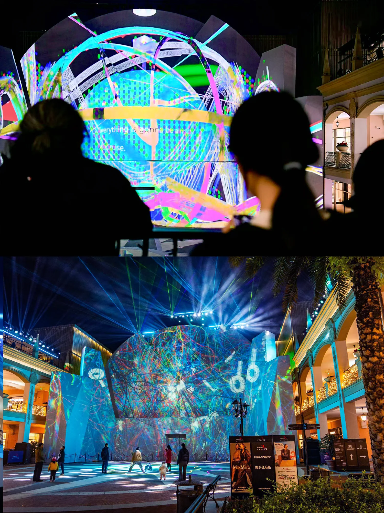
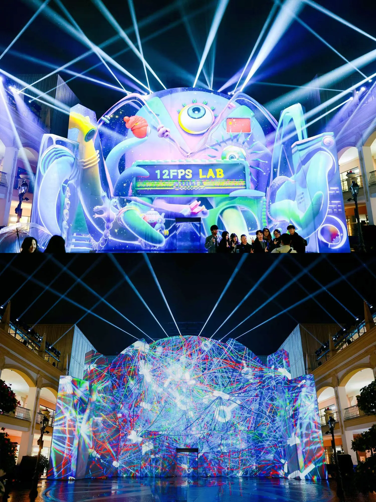
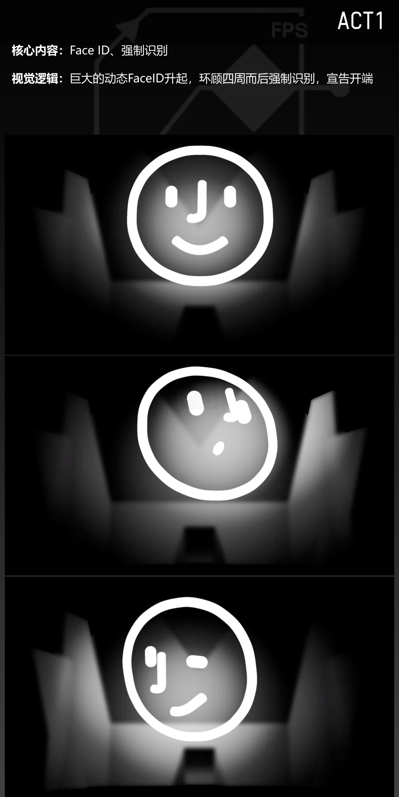
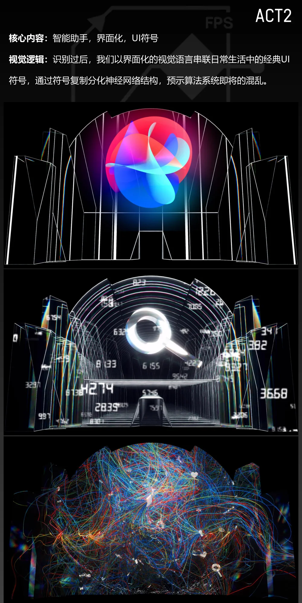
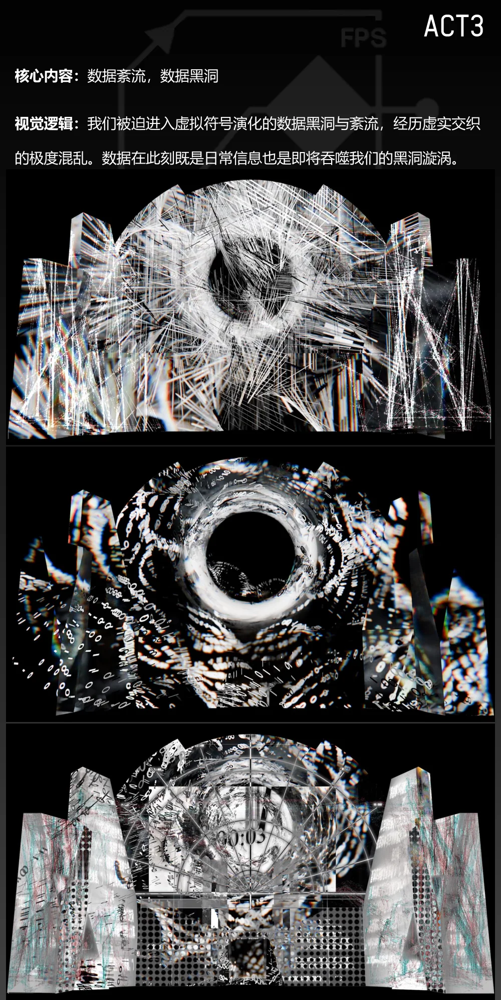
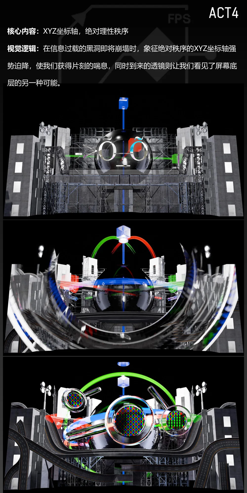
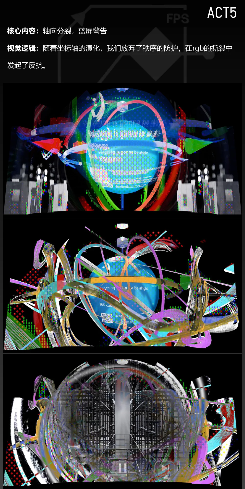
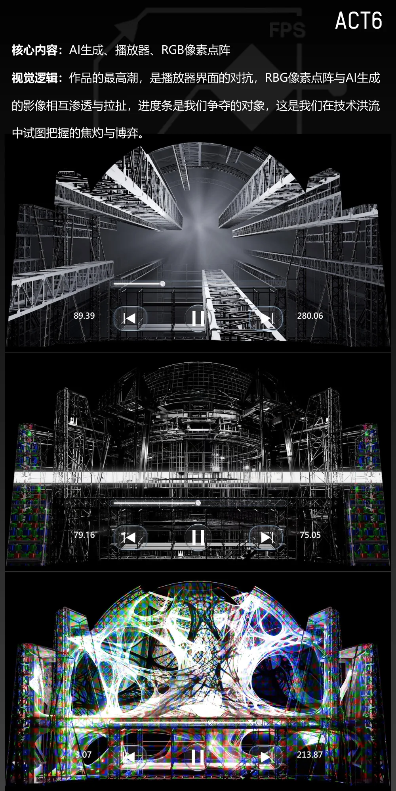
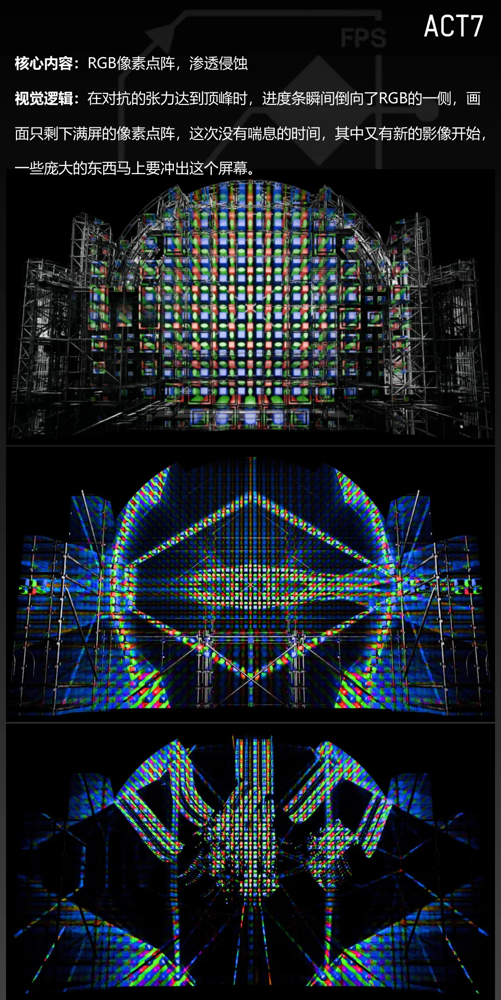
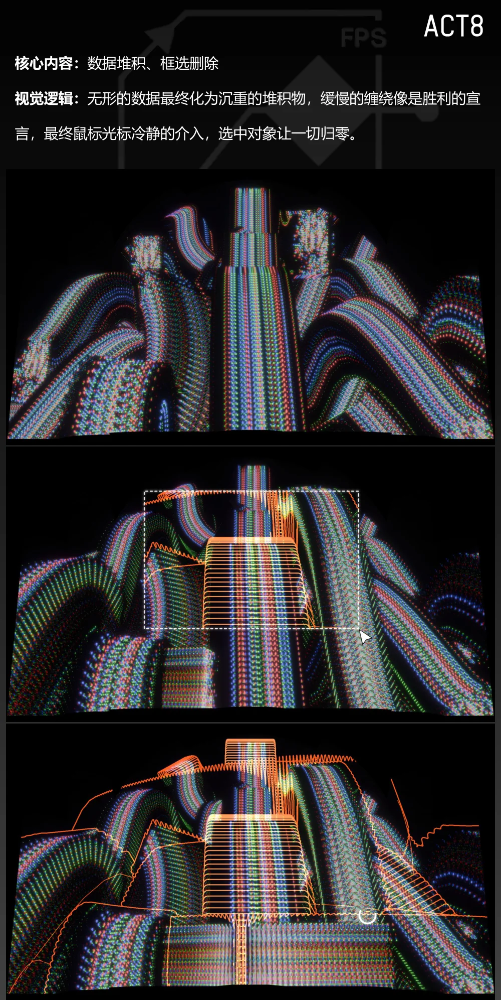

Enter ID
输入 ID
从一次强制识别开始，到一次框选删除结束——在信息洪流里，为自己留一片空白。
《Enter ID》是一次关于数字时代创作状态的视觉实验。技术的沉压漫过周身时，个体是如何被卷入、缠绕最终又重获片刻空白的过程？
作品以 Face ID 的强制识别为开端，我们被迫进入算法系统。随后，熟悉的 UI 符号构成了喧嚣的数据紊流，在信息过载的黑洞中，代表理性秩序的 XYZ 轴与服务器强势迫降，试图将感性体验强行纳入三维坐标的数学逻辑中。随着坐标的演化，秩序被撕裂瓦解，画面被推向播放器界面。在这里，屏幕最底层的 RGB 矩阵与 AI 生成的未知图像相互渗透、拉扯，进度条的反复跳跃，这是我们在技术洪流中试图把握的焦灼与博弈。当这种张力达到顶峰，无形的数据最终实体化为沉重的堆积物。最后，鼠标光标冷静介入，选中对象让一切归零。
It begins with a forced scan and ends with a single select-and-delete: a moment of blankness carved out of the flood of data.
"Enter ID" is a visual experiment exploring creative states in the digital age. When technological oppression envelops us, how are individuals drawn into, entangled by, and ultimately reclaimed by fleeting moments of blankness? The work begins with Face ID's mandatory recognition, forcing us into algorithmic systems. Familiar UI symbols then form a chaotic data torrent, where rational order represented by XYZ axes and servers crash into the black hole of information overload, attempting to force emotional experiences into the mathematical logic of three-dimensional coordinates. As coordinates evolve, order is torn apart, and the frame shifts to a media player interface. Here, the RGB matrix at the screen's bottom layer intertwines with AI-generated unknown images, while the progress bar repeatedly jumps—this captures our anxiety and struggle to grasp the technological tide. When this tension peaks, invisible data materializes as heavy accumulations. Finally, the mouse cursor calmly intervenes, selecting objects to reset everything to zero.










